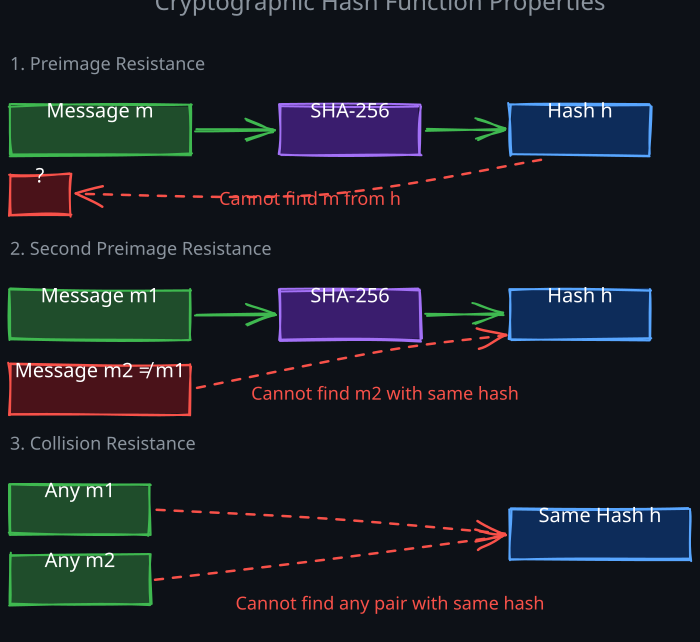
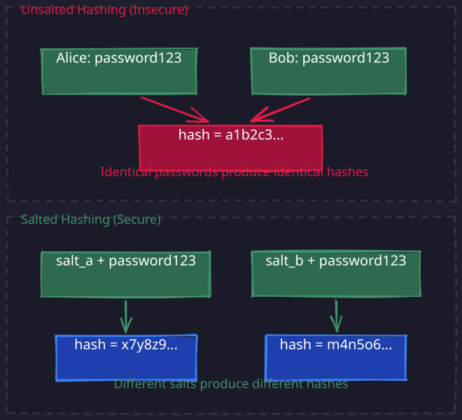
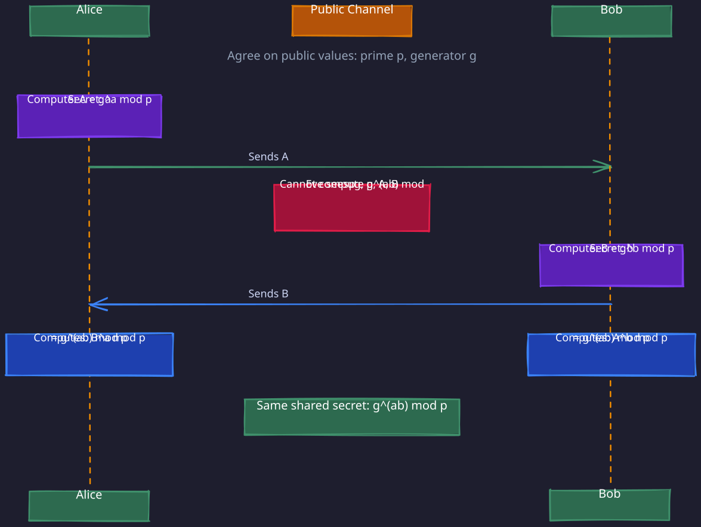
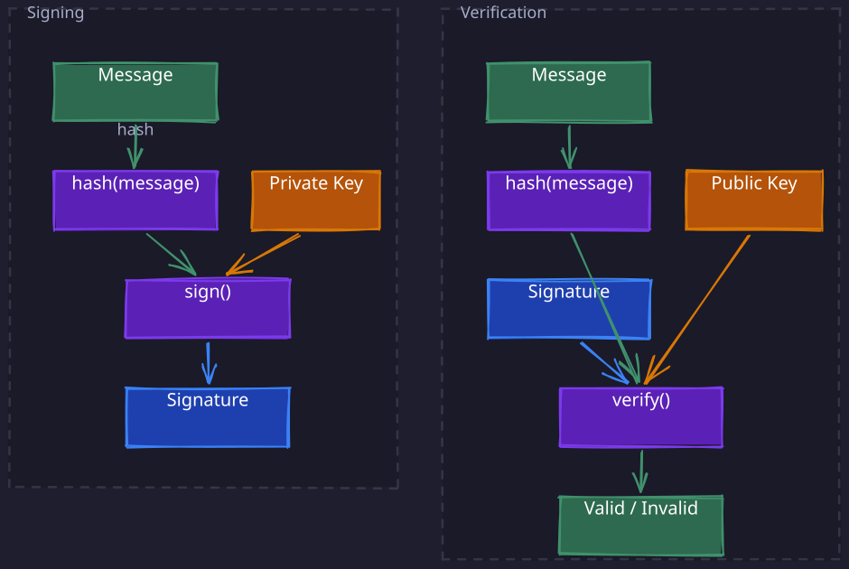

The Story
The Allies broke Enigma partly because German operators were predictable — messages often began with weather reports, “HEIL HITLER” appeared frequently, and operators reused settings. The mathematical weakness of the cipher was real, but it was human habits that made it exploitable. Alan Turing’s bombes exploited these “cribs” (known plaintext fragments) to narrow the search space from astronomical to manageable. The same lesson applies today: cryptographic primitives are only as strong as how they’re used. The most sophisticated encryption is worthless if the key is “password123” or if the implementation leaks timing information through side channels.
Every security protocol in distributed systems — TLS, JWT, OAuth, certificate validation, password storage — is built from a small set of cryptographic primitives. These primitives are the atoms of security: hash functions, key exchanges, digital signatures, and message authentication codes. Understanding them at a mechanical level transforms security protocols from opaque black boxes into systems you can reason about, debug, and design.
This note covers the foundational building blocks. For how these primitives combine into authentication and authorization protocols, see 02-Cryptography-Authentication and 03-Authorization-Concepts.
1. One-Way Functions — The Foundation of All Cryptography
All of cryptography rests on a single asymmetry: there exist functions that are easy to compute in one direction but infeasible to reverse. This asymmetry is not a mathematical impossibility — it is a computational hardness assumption. Given enough time (billions of years) or a sufficiently powerful computer (one that does not yet exist), these functions could theoretically be reversed. In practice, the computation required to reverse them exceeds the energy output of the sun over its lifetime, making them effectively irreversible.
The mental model is paint mixing. If you mix yellow and blue paint, you get green. Given the green paint, you cannot un-mix it to recover the original yellow and blue. The forward operation (mixing) is trivial; the reverse operation (un-mixing) is practically impossible. Cryptographic one-way functions work on the same principle, but with mathematical operations instead of pigments.
Three categories of one-way functions underpin modern cryptography:
- Cryptographic hash functions — take any input, produce a fixed-size output (a “fingerprint”). You cannot recover the input from the output. Used in: password storage, data integrity, PKCE, Merkle trees.
- Trapdoor one-way functions — one-way functions that become reversible if you possess a secret “trapdoor.” This is the basis of asymmetric cryptography: the public key computes the forward direction, the private key (the trapdoor) computes the reverse. Used in: RSA encryption, digital signatures, certificate validation.
- Discrete logarithm problems — computing
g^x mod pis easy; recoveringxfrom the result is infeasible. This is the basis of Diffie-Hellman key exchange and elliptic curve cryptography. Used in: TLS key exchange, ECDHE, ECDSA.
Every time you encounter a security protocol that seems to “magically” derive a shared secret, verify a signature, or prove integrity, the mechanism is one of these one-way functions. The rest of this note explains each category in depth.
2. Cryptographic Hash Functions
1. What a Hash Function Does
A cryptographic hash function takes an arbitrary-length input and produces a fixed-length output (the hash, or digest). SHA-256, the most widely used hash function today, always produces a 256-bit (32-byte) output regardless of whether the input is a single byte or an entire database.
The mental model is a deterministic fingerprint. Just as a human fingerprint uniquely identifies a person, a cryptographic hash uniquely identifies a piece of data. The same input always produces the same hash. But unlike a fingerprint, you cannot reconstruct the person (the input) from the fingerprint (the hash).
2. The Three Security Properties
A hash function must satisfy three properties to be considered cryptographically secure. Understanding what each property prevents is more important than memorizing the names:
- Preimage resistance (one-wayness): given a hash output
h, it is infeasible to find any inputmsuch thathash(m) = h. This is what makes password hashing work — an attacker who steals a database of hashed passwords cannot reverse the hashes to recover the original passwords. - Second preimage resistance: given an input
m1and its hashhash(m1), it is infeasible to find a different inputm2such thathash(m2) = hash(m1). This prevents an attacker from substituting a malicious file that produces the same hash as a legitimate file. It is why you can verify software downloads by comparing hashes. - Collision resistance: it is infeasible to find any two distinct inputs
m1andm2such thathash(m1) = hash(m2). This is a stronger requirement than second preimage resistance — the attacker gets to choose both inputs. Collision resistance is critical for digital signatures: if an attacker could find two documents with the same hash, they could get you to sign one and then claim you signed the other.
3. Why MD5 and SHA-1 Are Broken
MD5 (128-bit output) and SHA-1 (160-bit output) were once standard. Both are now considered broken because researchers found practical collision attacks:
- MD5: collisions can be computed in seconds on a laptop. In 2008, researchers used an MD5 collision to forge a rogue CA certificate, demonstrating that the break has real-world security consequences.
- SHA-1: a collision was demonstrated in 2017 (the “SHAttered” attack), requiring approximately 2^63 computations — expensive but feasible for well-funded attackers.
SHA-256 (and the broader SHA-2 family) currently has no known practical attacks against any of its three security properties. SHA-3 (based on an entirely different construction called Keccak) exists as a fallback if SHA-2 is ever broken.
4. Where Hash Functions Appear in Security Protocols
Understanding where hashes are used helps you recognize them in protocol descriptions:
- Password storage: the server stores
hash(password), not the password itself. See 3. Salted Hashing and Password Storage. - PKCE in OAuth: the
code_challengeisSHA256(code_verifier). Preimage resistance is what makes it safe to send the challenge in the clear — an attacker cannot reverse it to recover the verifier. See 02-Cryptography-Authentication > 9. OAuth 2.0. - TLS Finished messages: a hash of the entire handshake transcript proves the handshake was not tampered with. See 02-Cryptography-Authentication > 4. The TLS 1.3 Handshake.
- Digital signatures: the signer hashes the message first, then signs the hash. Collision resistance ensures the signature is bound to a unique message. See 7. Digital Signatures.
- Data integrity: checksums on files, blocks, and network packets use hashes to detect corruption or tampering.

3. Salted Hashing and Password Storage
1. The Problem with Naive Hashing
The simplest password storage scheme is to hash each password and store the hash. When a user logs in, you hash the submitted password and compare it to the stored hash. If they match, the password is correct. This has a critical vulnerability: identical passwords produce identical hashes. If 10,000 users all choose “password123,” the database contains 10,000 identical hash values. An attacker who steals the hash database can:
- Precompute a rainbow table — a massive lookup table mapping common passwords to their hashes. Computing
SHA256("password123")once gives you the hash. Search the database for that hash, and you have instantly cracked every account using that password. - Identify password reuse — identical hashes reveal which users share the same password, even without knowing what the password is.
2. Salts: The Key Insight
A salt is a unique, random value generated for each user and prepended (or appended) to the password before hashing:
stored_hash = hash(salt + password)
The salt is stored in plaintext alongside the hash — it is not a secret. Its purpose is not to be hidden; its purpose is to ensure that identical passwords produce different hashes.
If Alice and Bob both use “password123” but have different salts (salt_alice = "x9f2", salt_bob = "k3m7"), their stored hashes are completely different:
hash("x9f2" + "password123") = a1b2c3... (Alice)
hash("k3m7" + "password123") = d4e5f6... (Bob)

This defeats rainbow tables because the attacker would need a separate table for every possible salt value — an astronomically large computation. It also hides password reuse: identical passwords are no longer visible in the database.3. CSPRNG: Why the Salt Must Be Unpredictable
The salt must be generated by a Cryptographically Secure Pseudorandom Number Generator (CSPRNG), not a regular random number generator. The difference:
- A regular PRNG (like most programming language
rand()functions) generates numbers that appear random but follow a deterministic sequence from a seed. If an attacker knows the seed or can observe enough outputs, they can predict future values. - A CSPRNG produces output that is computationally indistinguishable from true randomness. Even an attacker who observes all previous outputs cannot predict the next one. CSPRNGs draw entropy from hardware sources (CPU timing jitter, disk I/O timing, mouse movements) and use cryptographic algorithms to stretch this entropy.
If salts are predictable (e.g., sequential user IDs, timestamps), an attacker can precompute rainbow tables for those specific salt values. Unpredictable salts force the attacker to crack each password individually. CSPRNGs also generate session tokens, JWT secrets, OAuth state parameters, and any other value whose security depends on being unguessable.
4. Slow Hashing: Making Brute Force Expensive
SHA-256 is designed to be fast — modern GPUs can compute billions of SHA-256 hashes per second. This is a problem for password storage: an attacker who steals a salted hash database can try billions of password guesses per second. Password-specific hash functions deliberately slow down the computation:
- bcrypt: includes a configurable “work factor” that controls how many iterations of its internal cipher are performed. Doubling the work factor doubles the computation time. A typical setting makes each hash take ~100ms — negligible for a single login attempt, but it means an attacker can only try ~10 passwords per second per CPU core.
- scrypt: adds memory-hardness on top of CPU cost. The computation requires a large block of RAM, making it expensive to parallelize on GPUs (which have limited per-thread memory).
- Argon2 (the current recommendation): configurable CPU cost, memory cost, and parallelism. Winner of the Password Hashing Competition (2015).
The economic argument: if each password guess costs 100ms of computation, guessing a billion passwords takes ~3 years on a single core. This makes brute-force attacks impractical for all but the weakest passwords.
4. The Hardness Assumptions Behind Asymmetric Cryptography
All asymmetric cryptography rests on mathematical problems that are easy to compute in one direction but believed to be infeasible to reverse. These are called hardness assumptions because they are not mathematically proven to be hard — they are simply problems for which no efficient algorithm has been found despite decades of research. If an efficient algorithm were discovered (or a sufficiently powerful quantum computer built), the cryptography would break.
1. RSA: The Integer Factorization Problem
RSA security rests on the difficulty of factoring large numbers. The setup:
- Choose two large prime numbers
pandq(each ~1024 bits, so ~308 decimal digits). - Compute their product
n = p * q. This multiplication takes microseconds. - Publish
nas part of the public key. Keeppandqsecret.
The one-way property: given n, recover p and q. For small numbers this is trivial (15 = 3 * 5). But for a 2048-bit n (the product of two 1024-bit primes), the best known algorithms require computation on the order of 2^112 operations — far beyond what any computer can perform in a human lifetime.
Why is factoring hard? Because there is no known shortcut. The naive approach is trial division (try every possible divisor), but the search space grows exponentially with the size of the number. The best known classical algorithm (the general number field sieve) is sub-exponential but still infeasible for keys of 2048 bits or larger.
Key size matters: RSA-512 was factored in 1999. RSA-768 was factored in 2009. RSA-2048 is the current minimum recommended key size; RSA-4096 provides a larger security margin.
2. Elliptic Curve Cryptography: The Discrete Logarithm Problem
Elliptic curve cryptography (ECC) uses a different hard problem: the elliptic curve discrete logarithm problem (ECDLP).
An elliptic curve is a mathematical structure where you can define a “point addition” operation: given two points on the curve, you can compute a third point. Repeating this operation (point multiplication) is efficient: computing n * P (adding point P to itself n times) is fast even for very large n.
The one-way property: given P and Q = n * P, recover n. This is the discrete logarithm problem on the elliptic curve. For well-chosen curves, the best known algorithms require approximately 2^(k/2) operations for a k-bit curve.
Why ECC matters for systems engineers: ECC provides the same security as RSA with much smaller keys. A 256-bit elliptic curve key provides roughly the same security as a 3072-bit RSA key. Smaller keys mean faster computations, smaller certificates, less bandwidth, and faster TLS handshakes. This is why modern TLS almost universally uses ECDHE (Elliptic Curve Diffie-Hellman Ephemeral) rather than classical Diffie-Hellman.
| Algorithm | Key Size for ~128-bit Security | Signature Size |
|---|---|---|
| RSA | 3072 bits | 3072 bits |
| ECDSA (P-256) | 256 bits | 512 bits |
| Ed25519 | 256 bits | 512 bits |
3. Lattice-Based Cryptography: The Post-Quantum Frontier
Both RSA and ECC are vulnerable to quantum computers. Shor’s algorithm (1994) can factor integers and compute discrete logarithms in polynomial time on a quantum computer. A sufficiently large quantum computer (estimated at several thousand logical qubits) would break RSA-2048 and ECDSA-256 in hours.
Lattice-based cryptography rests on a different hard problem: the Shortest Vector Problem (SVP) in high-dimensional lattices. A lattice is a regular grid of points in many dimensions (think of a 3D crystal structure, but in 500+ dimensions). Finding the shortest non-zero vector in such a lattice is believed to be hard even for quantum computers — no quantum algorithm offers a significant speedup.
NIST has standardized lattice-based algorithms as the post-quantum replacements:
- ML-KEM (formerly CRYSTALS-Kyber): key encapsulation (replacing ECDH for key exchange)
- ML-DSA (formerly CRYSTALS-Dilithium): digital signatures (replacing ECDSA)
The tradeoff: lattice-based keys and signatures are significantly larger than their ECC counterparts (kilobytes vs. bytes), which increases bandwidth and storage costs. This is why the transition is gradual — systems are moving to “hybrid” modes that combine classical and post-quantum algorithms.
For systems engineers, the practical implication is: data encrypted today with RSA or ECC can be stored by an adversary and decrypted later when quantum computers become available (“harvest now, decrypt later”). Systems handling long-lived secrets should begin planning for post-quantum migration.
5. Diffie-Hellman Key Exchange
1. The Problem
Two parties (Alice and Bob) need to communicate securely over a public channel. They need a shared secret key to encrypt their messages with fast symmetric cryptography (AES). But the channel is hostile — an eavesdropper (Eve) can read every message they exchange. How do Alice and Bob agree on a shared secret without ever transmitting it? The naive approach is for Alice to generate a key and send it to Bob. But Eve sees this transmission and now has the key too. Every obvious solution fails because anything transmitted over the channel is visible to the eavesdropper.
2. The Key Insight: Color Mixing Analogy
Diffie-Hellman’s insight is that certain mathematical operations, like mixing paint colors, are easy to perform but impossible to reverse.
The analogy works as follows:
- Alice and Bob publicly agree on a shared starting color (say, yellow). Eve sees this — it is not a secret.
- Alice picks a secret color (say, red) and mixes it with the shared yellow. She sends the resulting orange to Bob. Eve sees the orange but cannot un-mix it to recover Alice’s secret red.
- Bob picks a secret color (say, blue) and mixes it with the shared yellow. He sends the resulting green to Alice. Eve sees the green but cannot un-mix it to recover Bob’s secret blue.
- Alice takes Bob’s green and mixes in her secret red. She gets a brown.
- Bob takes Alice’s orange and mixes in his secret blue. He gets the same brown.
Both Alice and Bob now share the same color (brown), but Eve only saw yellow, orange, and green — she never saw red or blue, and she cannot un-mix to recover them. The shared brown is the shared secret.
Why can’t Eve just mix orange and green? This is the critical subtlety. Eve has orange (yellow + red) and green (yellow + blue). If she mixes them, she gets yellow + red + yellow + blue — a muddy color with two doses of yellow. The actual shared secret (brown) is yellow + red + blue with only one dose of yellow. Eve’s mixture is a different color. To get the real brown, Eve would need to add just red to green (or just blue to orange), but she cannot extract the secret colors from the mixed colors — that requires un-mixing, which is irreversible.
3. The Mathematical Mechanism
The actual protocol uses modular exponentiation instead of paint:
- Alice and Bob publicly agree on a large prime
pand a generatorg. These are not secret. - Alice chooses a secret random number
aand computesA = g^a mod p. She sendsAto Bob. - Bob chooses a secret random number
band computesB = g^b mod p. He sendsBto Alice. - Alice computes the shared secret:
s = B^a mod p = (g^b)^a mod p = g^(ab) mod p. - Bob computes the shared secret:
s = A^b mod p = (g^a)^b mod p = g^(ab) mod p.
Both arrive at g^(ab) mod p. Eve knows g, p, A = g^a mod p, and B = g^b mod p, but cannot compute g^(ab) mod p without knowing either a or b.
Why can’t Eve just multiply A and B? This is the mathematical equivalent of the “mix orange and green” question. Eve can compute A * B = g^a * g^b = g^(a+b) mod p. But the shared secret is g^(ab) mod p — that is g raised to the product of a and b, not their sum. These are completely different values. There is no known way to compute g^(ab) from g^a and g^b without knowing a or b individually. Recovering a from A = g^a mod p is the discrete logarithm problem — the same hard problem that makes this secure.

4. ECDHE: Elliptic Curve Diffie-Hellman Ephemeral
ECDHE is Diffie-Hellman performed using elliptic curve point multiplication instead of modular exponentiation. The mathematics are different (point multiplication on a curve instead of exponentiation in a prime field), but the structure is identical:
- Alice and Bob agree on an elliptic curve and a base point
G. - Alice picks a secret integer
a, computesA = a * G(point multiplication), and sendsA. - Bob picks a secret integer
b, computesB = b * G, and sendsB. - Both compute the shared secret:
a * B = a * (b * G) = b * (a * G) = b * A.
The advantage over classical DH: equivalent security with much smaller numbers (256-bit vs. 2048-bit), meaning faster computation and smaller messages. This is why TLS 1.3 uses ECDHE exclusively for its key exchange.
5. Why “Ephemeral” Means Forward Secrecy
The “E” in ECDHE stands for “ephemeral” — the key exchange values a and b are generated fresh for every session and discarded immediately after the shared secret is derived.
This provides forward secrecy: if an attacker compromises the server’s long-term private key (used for signing, not for key exchange), they cannot decrypt past sessions. Each session’s shared secret was derived from ephemeral DH values that no longer exist. The long-term private key is only used to sign the handshake (proving the server’s identity), not to derive the encryption key.
Without ephemeral keys (as in older RSA key exchange), the server’s private key directly decrypts the session key. Compromising that one key retroactively exposes every recorded session. This is why TLS 1.3 removed RSA key exchange entirely and mandates ECDHE.
6. Message Authentication Codes (MACs)
1. The Problem MACs Solve
Encryption protects confidentiality — an eavesdropper cannot read the message. But encryption alone does not protect integrity. An attacker who cannot read an encrypted message might still be able to modify it in useful ways (bit-flipping attacks, reordering blocks). The recipient would decrypt the modified ciphertext and get corrupted plaintext, with no way to detect the tampering.
A Message Authentication Code (MAC) is a keyed hash that provides integrity and authenticity. Given a shared secret key and a message, the MAC produces a short tag. The recipient, who shares the same key, can recompute the tag and verify it matches. If the message was modified in transit, the tags will not match.
2. How HMAC Works
HMAC (Hash-based MAC) is the standard MAC construction, built on top of any cryptographic hash function (e.g., HMAC-SHA256). The computation:
HMAC(key, message) = hash((key XOR opad) || hash((key XOR ipad) || message))
where opad and ipad are fixed padding constants.
The important question is: why not simply compute hash(key || message) (concatenate the key and message, then hash)? This simpler construction is vulnerable to a length extension attack. With many hash functions (including SHA-256), given hash(key || message) and the length of key || message, an attacker can compute hash(key || message || attacker_data) without knowing the key. The attacker appends data to the message and produces a valid hash, breaking integrity.
HMAC’s nested structure prevents this. The outer hash effectively “seals” the inner hash, making length extension infeasible. This is why HMAC is the standard, not naive key-prefixed hashing.
3. MACs vs. Digital Signatures
Both MACs and digital signatures provide integrity and authentication, but they differ in a fundamental way:
| Property | MAC (e.g., HMAC) | Digital Signature (e.g., RSA, ECDSA) |
|---|---|---|
| Key type | Symmetric (shared secret) | Asymmetric (private key signs, public key verifies) |
| Who can produce | Anyone with the shared key | Only the holder of the private key |
| Who can verify | Anyone with the shared key | Anyone with the public key |
| Non-repudiation | No — both parties can produce the MAC | Yes — only the signer can produce the signature |
Non-repudiation is the key difference. With a MAC, both Alice and Bob share the same key, so either of them could have produced the tag. Neither can prove to a third party that the other produced it. With a digital signature, only the signer’s private key can produce the signature, so the signer cannot deny having signed it.
When to use each:
- MACs: when two parties who already share a secret need to verify message integrity. Examples: the TLS
Finishedmessage (both sides share the derived key), HMAC-based JWT signing (HS256) where the issuer and verifier share a secret. - Digital signatures: when the verifier should not be able to forge, or when many parties need to verify without sharing a secret. Examples: certificate signatures (anyone can verify using the CA’s public key), asymmetric JWT signing (RS256 — only the auth server can sign, all services can verify).
4. Where MACs Appear in Security Protocols
- TLS Finished messages: after the key exchange, both sides compute a MAC over the entire handshake transcript using the newly derived shared key. This proves the handshake was not tampered with. See 02-Cryptography-Authentication > 4. The TLS 1.3 Handshake.
- JWT with HS256:
HMAC-SHA256(secret, header.payload)produces the signature. Both the issuer and verifier share the secret. See 02-Cryptography-Authentication > 7. JSON Web Tokens (JWT). - API request signing: AWS Signature V4 uses HMAC-SHA256 to sign API requests, binding the request to the caller’s secret key and preventing tampering.
7. Digital Signatures
1. What a Digital Signature Proves
A digital signature provides three guarantees:
- Authenticity: the message was produced by the holder of the private key.
- Integrity: the message has not been modified since it was signed.
- Non-repudiation: the signer cannot deny having signed the message (because only their private key could have produced the signature).
These properties are what make certificate validation, JWT verification, and code signing work.
2. The Signing and Verification Mechanism
The process has two steps: Signing (performed by the signer, who holds the private key):
- Compute the hash of the message:
h = hash(message). This produces a fixed-size digest regardless of message size. - Apply the signing algorithm to the hash using the private key:
signature = sign(private_key, h).
Verification (performed by the verifier, who holds the public key):
- Compute the hash of the received message:
h' = hash(message). - Apply the verification algorithm:
verify(public_key, h', signature). This returns true if and only if the signature was produced by the corresponding private key over the same hash.
Why sign the hash instead of the message directly? Two reasons:
- Efficiency: signing operations (RSA, ECDSA) are computationally expensive. Hashing reduces any message to a small, fixed-size digest, and only the digest is signed.
- Security: collision resistance of the hash function ensures that the signature is bound to a unique message. No two different messages will produce the same hash (with overwhelming probability), so the signature cannot be “transferred” to a different message.

3. Why Signatures Are Unforgeable
The security of digital signatures rests on the hardness assumptions described in 4. The Hardness Assumptions Behind Asymmetric Cryptography:
- For RSA signatures: producing a valid signature requires computing
h^d mod n, wheredis the private exponent. An attacker who knows only the public key(n, e)would need to factornto recoverd— the integer factorization problem. - For ECDSA signatures: producing a valid signature requires knowing the private scalar
k. An attacker who knows only the public pointK = k * Gwould need to solve the elliptic curve discrete logarithm problem to recoverk.
In both cases, forging a signature without the private key requires solving a problem that is computationally infeasible with current technology.
4. Where Digital Signatures Appear in Security Protocols
- Certificate validation: a CA signs the hash of (subject identity + public key + metadata) with the CA’s private key. Any client can verify this signature using the CA’s public key. A forged certificate would require producing a valid CA signature without the CA’s private key — which is infeasible. See 02-Cryptography-Authentication > 3. Certificate Validation and the Chain of Trust.
- TLS CertificateVerify: the server signs the hash of the entire handshake transcript with its private key. This proves the server holds the private key matching its certificate. An attacker who intercepts and replays a legitimate certificate cannot produce this signature. See 02-Cryptography-Authentication > 4. The TLS 1.3 Handshake.
- JWT with RS256/ES256: the auth server signs the JWT payload with its private key. Any service with the public key can verify the signature, confirming the token is authentic and untampered. See 02-Cryptography-Authentication > 7. JSON Web Tokens (JWT).
- Code signing: software distributors sign binaries so that users can verify the code has not been tampered with.
5. Signing Algorithms in Practice
| Algorithm | Based On | Key Size | Use Case |
|---|---|---|---|
| RSA-SHA256 (RS256) | Integer factorization | 2048-4096 bits | JWT, TLS certificates (legacy) |
| ECDSA-SHA256 (ES256) | Elliptic curve discrete log (P-256) | 256 bits | JWT, modern TLS certificates |
| Ed25519 | Elliptic curve discrete log (Curve25519) | 256 bits | SSH keys, newer protocols |
| ML-DSA (Dilithium) | Lattice problems | ~2.5 KB | Post-quantum signatures |
Ed25519 is increasingly preferred over ECDSA because it is faster, has a simpler implementation (fewer opportunities for subtle bugs), and is resistant to certain side-channel attacks that affect ECDSA.
Revision Summary
- One-way functions are the foundation of all cryptography: easy to compute forward, infeasible to reverse. Hash functions, trapdoor functions, and discrete logarithm problems are the three categories.
- Cryptographic hash functions produce a deterministic fingerprint. Three properties matter: preimage resistance (cannot reverse), second preimage resistance (cannot find a substitute), collision resistance (cannot find any two inputs with the same hash). SHA-256 is the standard.
- Salted hashing defeats rainbow tables by prepending a unique random salt to each password before hashing. The salt is not secret — its purpose is to make identical passwords produce different hashes. Slow hash functions (bcrypt, Argon2) make brute-force attacks economically infeasible.
- CSPRNG (Cryptographically Secure PRNG) produces output indistinguishable from true randomness. Used for salts, session tokens, JWT secrets, OAuth state parameters — any value that must be unguessable.
- RSA rests on the difficulty of factoring large numbers. ECC rests on the discrete logarithm problem on elliptic curves, providing equivalent security with much smaller keys. Both are broken by quantum computers (Shor’s algorithm).
- Lattice-based cryptography (ML-KEM, ML-DSA) is the post-quantum replacement. Larger keys and signatures, but resistant to known quantum attacks.
- Diffie-Hellman key exchange allows two parties to derive a shared secret over a public channel. The eavesdropper sees the public values but cannot compute the shared secret (discrete logarithm problem). ECDHE uses elliptic curves for smaller keys and faster computation. Ephemeral keys provide forward secrecy — past sessions cannot be decrypted even if the server’s long-term key is compromised.
- MACs (HMAC) provide integrity and authentication using a shared symmetric key. HMAC’s nested structure prevents length extension attacks. MACs do not provide non-repudiation (both parties can produce the tag).
- Digital signatures provide integrity, authentication, and non-repudiation using asymmetric keys. Only the private key holder can sign; anyone with the public key can verify. Signatures are computed over the hash of the message (for efficiency and security). Unforgeable because forging requires solving the underlying hard problem (factoring, discrete log).
Deep Understanding Questions
-
SHA-256 has a 256-bit output, meaning there are 2^256 possible hash values. By the pigeonhole principle, collisions must exist (there are infinitely many inputs but only 2^256 outputs). If collisions definitely exist, why do we say SHA-256 is collision-resistant? What exactly does “resistance” mean in this context, and how does it differ from “impossibility”? Ans:
-
In Diffie-Hellman key exchange, Eve sees
g,p,A = g^a mod p, andB = g^b mod p. She wants to computeg^(ab) mod p. Explain why she cannot simply computeA * B = g^(a+b) mod pand use that. What is the fundamental mathematical reason that knowingg^aandg^bdoes not help computeg^(ab)? Ans: -
A developer implements password hashing using
SHA256(user_id + password)instead of a proper salt + slow hash. Identify all the security weaknesses in this approach. Why is a user ID a poor substitute for a random salt? Why is SHA-256 a poor choice even with a proper salt? Ans: -
HMAC uses a nested hash:
hash(key XOR opad || hash(key XOR ipad || message)). Explain the length extension attack that the naivehash(key || message)construction is vulnerable to. Why does the outer hash in HMAC prevent this attack? Ans: -
An attacker records all TLS traffic between a client and server for a year. The server uses ECDHE for key exchange and RSA for certificate authentication. The attacker then steals the server’s RSA private key. Can they decrypt the recorded traffic? What if the server had used RSA key exchange (not ECDHE) instead? Explain the difference in terms of what each key is used for. Ans:
-
ECC with a 256-bit key provides roughly the same security as RSA with a 3072-bit key. Why does ECC achieve the same security with smaller keys? The answer involves the best known algorithms for each problem — explain what those algorithms are and why their complexity differs. Ans:
-
A system uses Ed25519 signatures. An implementer notices that ECDSA requires a random nonce for each signature and that reusing a nonce leaks the private key. Does Ed25519 have the same vulnerability? How does Ed25519 generate its “nonce,” and why does this design choice eliminate an entire class of implementation bugs? Ans:
-
Post-quantum algorithms like ML-KEM have significantly larger key sizes (kilobytes vs. bytes for ECC). What practical impacts does this have on TLS handshake performance, certificate chain sizes, and mobile device constraints? Why might a system choose a “hybrid” approach that combines both ECC and ML-KEM during the transition period? Ans: